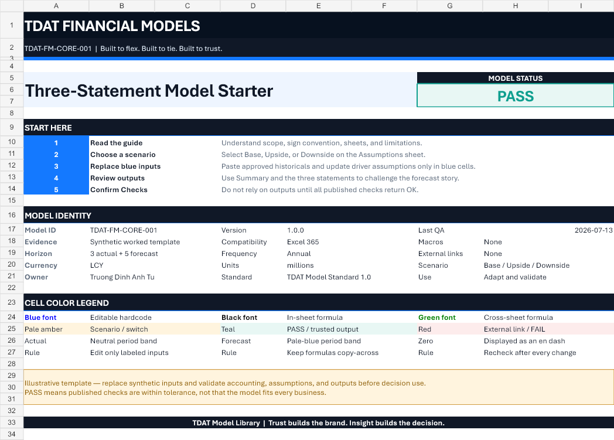
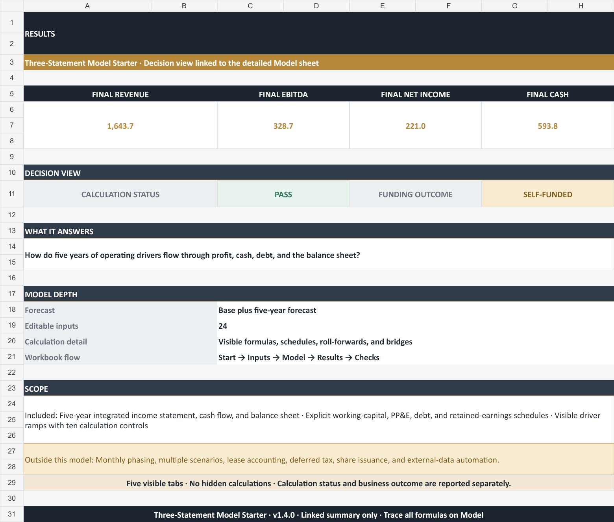
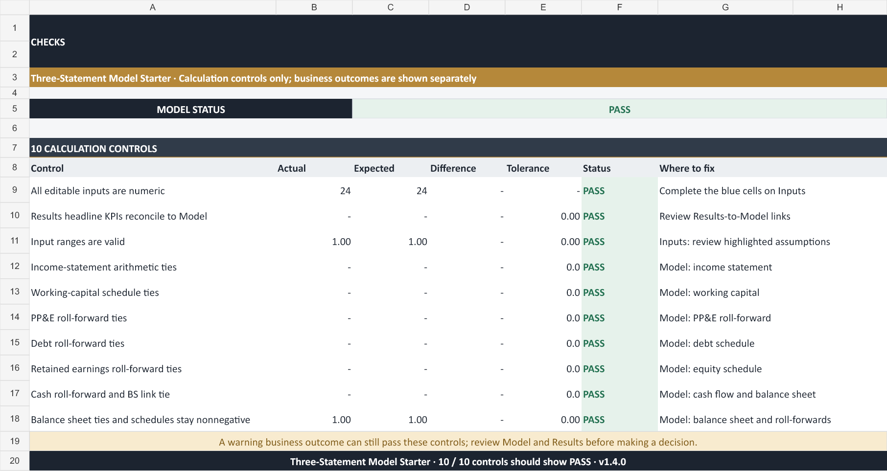

Available · TDAT-FM-CORE-001
Three-Statement Model Starter
A reusable single-entity operating model that connects revenue, margin, operating expense, working capital, PP&E, debt, retained earnings, and cash across three historical years and five forecast years. Use it as a governed starting point for FP&A, corporate finance, valuation foundations, interview cases, or learning.
Model status PASS
27 / 27 published checks
Macro-free
No external links
Synthetic example

Start here
Five steps from download to a reviewable first forecast.
Read Cover + Read Me
Confirm scope, sign convention, version, color legend, limitations, and supported use.
Select a scenario
Use the controlled Base, Upside, or Downside selector on the Assumptions sheet.
Replace blue inputs
Update synthetic historicals and forecast drivers with approved, sourced values.
Review outputs
Challenge the integrated P&L, balance sheet, cash flow, debt path, and management summary.
05 · Resolve Checks before use
Balance sheet, cash roll-forward, debt, retained earnings, historical tie-outs, selector validity, input completeness, and forecast sanity checks are visible in one place. A failed control includes a “where to fix” cue; never force the model to balance through an unexplained cash, equity, or other plug.
Workbook map
Eleven sheets with one clear flow from input to decision.
Documentation and control layer
- Cover: model identity, quick start, version, release context, status, and color legend.
- Read Me: purpose, workbook map, sign convention, flexibility rules, privacy, and limitations.
- Summary: scenario, status, integrated performance, 2030 outlook, and decision prompts.
- Assumptions: one selector plus Base, Upside, Downside, and selected-driver output blocks.
- Sources & Version: assumption register, changelog, usage note, exclusions, and issue-report instructions.
Model and QA layer
- Historical: three years of synthetic P&L, balance sheet, and cash-flow inputs.
- Schedules: drivers, working capital, PP&E, debt, and equity roll-forwards.
- Income Statement: revenue through net income with visible margin logic.
- Balance Sheet: assets, liabilities, equity, and a non-plug balance check.
- Cash Flow: indirect cash flow and explicit opening-to-ending cash roll-forward.
- Checks: 27 published assertions with actual, expected, difference, tolerance, status, and fix location.
What moves the model
Operating drivers feed explicit schedules before they reach the statements.
Revenue & margin
Revenue growth, gross margin, and opex as a percentage of revenue create an auditable operating forecast.
Working capital
DSO, DIO, DPO, and other balance ratios translate commercial timing into cash movements.
PP&E
Opening net PP&E plus capex and depreciation produces a visible closing asset roll-forward.
Debt & interest
Opening debt, explicit borrowing, mandatory repayment, and average-balance interest avoid a hidden funding plug.
Tax & equity
Effective tax, share issuance, dividend payout, and retained earnings flow into equity and cash.
Scenarios
Base, Upside, and Downside alter the driver set; statement outputs recalculate through the same core formulas.
Cash
Net income, non-cash items, working capital, capex, debt, dividends, and equity roll into closing cash.
Decision prompts
The Summary asks who owns growth, margin, working capital, liquidity, capex, debt, scenario, and governance calls.
Rendered from the actual workbook
The web preview shows the same file users download.


QA and release evidence
Base, Upside, and Downside passed the published formula and finance checks.
Published model checks
- Five forecast balance-sheet checks return zero within 0.01 model unit.
- Five forecast cash roll-forwards reconcile opening cash, net change, and ending cash.
- Five debt and five retained-earnings roll-forwards tie to their components.
- Historical balance-sheet and cash roll-forward checks tie across 2023A–2025A.
- Scenario, selected-driver completeness, revenue, gross-margin, and no-hidden-plug checks pass.
- Base, Upside, and Downside all recalculate to MODEL STATUS: PASS with no visible formula errors.
- Formula scan found no visible #REF!, #DIV/0!, #VALUE!, #NAME?, #N/A, or #NUM! errors.
Distribution controls
- Macro-free .xlsx; no external workbook links or intentional circular references.
- Synthetic company and scenario values; no customer, employee, vendor, or transaction records.
- All eleven sheets received a visual render pass for clipping, hierarchy, and legibility.
- Compatibility is stated as Excel 365; Google Sheets and LibreOffice are not verified.
- PASS covers the published controls, not the suitability of user assumptions or accounting treatment.
SHA-256
720A4BEC9679F3A72F96DECC37FF9F08EF871DB3C07A41350DB59620AF6CF333
Compatibility, limits, and use
A strong starter is clear about what it does not model.
Included in version 1.0.0
Single entity, annual periods, three actual years, five forecast years, integrated statements, simple driver scenarios, working capital, PP&E, debt, equity, cash, summary, sources, and checks.
Deliberately out of scope
Multi-entity consolidation, monthly planning, IFRS 16, NOL and detailed tax, M&A purchase accounting, LBO cash sweeps, complex debt tranches, covenant tests, regulated risk logic, and project-finance waterfalls.
Usage note
Download, copy, and adapt the template for learning, interview cases, personal analysis, or internal business planning. Do not resell or redistribute an unchanged copy as your own product.
Professional responsibility
Validate sources, assumptions, formulas, accounting treatment, taxes, legal constraints, and suitability before real-world use. The template is educational and analytical, not professional advice, and is provided without warranty.
Change log
One stable route and filename; versions live inside the model.
| Version | Date | Change | Impact | Status |
|---|---|---|---|---|
| 1.0.0 | 2026-07-13 | Initial public Three-Statement Model Starter | New canonical release | Available |